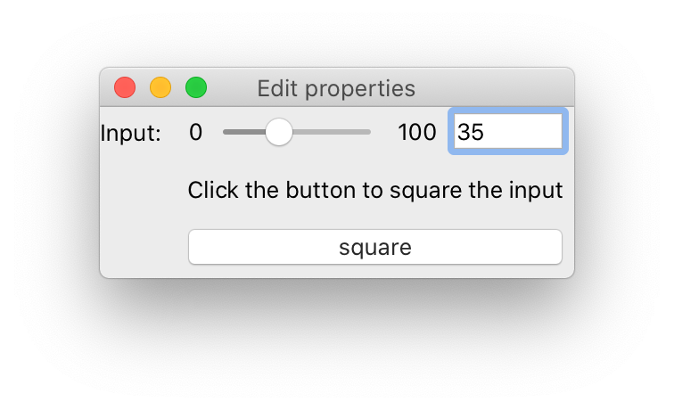

Overview¶
Why Traits Futures?¶
In a nutshell, Traits Futures allows GUI applications to execute one or more background tasks without blocking the main GUI, and then safely update the GUI in response to full or partial results from those background tasks. For more details and an explanation of why this is needed, read on.
The GUI frameworks that we work with in the Enthought Tool Suite are essentially1 single-threaded. When an application is started, the main thread of the Python process enters the GUI framework’s event loop, for example via a call to QApplication::exec. That event loop then waits for relevant events (user interactions with widgets, external network events, timing events, and so on) in a loop, and when they occur, dispatches those events to appropriate event handlers. In many cases those handlers take the form of callbacks into Python code.
Traits-based GUIs that perform significant work in response to user interactions (for example, running a complex computation, or submitting a complex search query to a remote database) face two main problems.
Problem 1: unresponsive GUIs¶
Thanks to the single-threaded nature of the GUI frameworks, the various callbacks into Python land are executed in serial rather than in parallel: only one callback can be executing at any given time, and that callback must complete its execution before any other callback can start to execute. So while a particular callback is executing, the GUI cannot respond to other user interactions. This presents a problem if you want to run a calculation (for example) from within a GUI.
The following example code
demonstrates this effect. It provides a simple GUI wrapper for a slow
calculation. In this case, the slowness is simulated via a call to
time.sleep.
"""
Example of GUI that runs a time-consuming calculation in the main thread.
This example demonstrates that the GUI is unresponsive while the calculation
is running.
"""
import time
from traits.api import Button, HasStrictTraits, observe, Range, Str
from traitsui.api import Item, UItem, View
def slow_square(input):
"""
Square a number, slowly.
"""
# Simulate a slow calculation
time.sleep(10.0)
return input * input
class SlowSquareUI(HasStrictTraits):
"""
GUI wrapper for the slow_square computation.
"""
#: Value to square.
input = Range(0, 100, 35)
#: Status message.
message = Str("Click the button to square the input")
#: Button to start calculation.
square = Button("square")
@observe("square")
def _run_calculation(self, event):
self.message = f"Calculating square of {self.input} ..."
result = slow_square(self.input)
self.message = f"The square of {self.input} is {result}"
view = View(
Item("input"),
UItem("message", style="readonly"),
UItem("square"),
resizable=True,
)
if __name__ == "__main__":
SlowSquareUI().configure_traits()
When you run this code, you should see a dialog that looks something like this (modulo platform-specific styling differences):
Before the “square” button is clicked, the input can be adjusted via keyboard and mouse, and the window can be resized. But once the “square” button is clicked, the GUI becomes unresponsive until the calculation completes 10 seconds later: the input cannot be adjusted, and the window cannot be resized.
There a second, subtler, problem with this code. In the _run_calculation
method, before we kick off the long-running calculation we update the UI’s
status message to report that a calculation is in progress. We then update the
message again at the end of that method with the result of the calculation. But
in the GUI, depending on the toolkit and operating system in use, we may never
see a message update for that first self.message = assignment. That’s
because the graphical update occurs as the result of another task sitting in
the event loop’s task queue, and our current callback is blocking that task
from executing.
Problem 2: Safely updating the GUI¶
The solution to the responsiveness issue described in the previous section is
straightforward: we move the calculation to a separate thread or process,
freeing up the main thread so that the GUI can continue to respond to user
interactions. This in itself doesn’t require Traits Futures: it could be
accomplished directly by submitting the squaring jobs to a concurrent.futures
worker pool, for example.
But as soon as we move the calculation to a background thread, we run into a
second issue: GUI toolkits generally require that their objects (widgets, etc.)
are only manipulated from the thread on which they were created, which is
usually the main thread. For example, given a QLabel object label,
calling label.setText("some text") from anything other than the thread that
“owns” the label object is unsafe.
To demonstrate this, here’s a variation of the example script above that
dispatches squaring jobs to a background thread. Unlike the previous version,
the GUI remains responsive and usable while a background job is executing.
"""
Example of GUI that runs a time-consuming calculation in the background.
This example demonstrates the difficulties of updating the
main GUI in response to the results of the background task.
"""
import concurrent.futures
import time
from traits.api import Button, HasStrictTraits, Instance, observe, Range, Str
from traitsui.api import Item, UItem, View
def slow_square(input):
"""
Square a number, slowly.
"""
# Simulate a slow calculation
time.sleep(10.0)
return input * input
class SlowSquareUI(HasStrictTraits):
"""
GUI wrapper for the slow_square computation.
"""
#: concurrent.futures executor providing the worker pool.
worker_pool = Instance(concurrent.futures.Executor)
#: Value to square.
input = Range(0, 100, 35)
#: Status message.
message = Str("Click the button to square the input")
#: Button to start calculation.
square = Button("square")
@observe("square")
def _run_calculation(self, event):
self.message = f"Calculating square of {self.input} ..."
future = self.worker_pool.submit(slow_square, self.input)
future.add_done_callback(self._update_message)
def _update_message(self, future):
"""
Update the status when the background calculation completes.
"""
result = future.result()
self.message = f"The square of {self.input} is {result}"
view = View(
Item("input"),
UItem("message", style="readonly"),
UItem("square"),
resizable=True,
)
if __name__ == "__main__":
with concurrent.futures.ThreadPoolExecutor() as worker_pool:
SlowSquareUI(worker_pool=worker_pool).configure_traits()
When you try this code, it may work perfectly for you, or it may crash with a
segmentation fault. Or it may work perfectly during all your testing and only
crash after it’s been deployed to a customer. The main cause of difficulty is
the future.add_done_callback line. The callback it refers to,
self._update_message, will (usually, but not always) be executed on the
worker thread. That callback updates the message trait, which in turn
triggers an update of the corresponding QLabel widget, still on the worker
thread.
There are some other obvious issues with this code. There’s no mechanism in
place to prevent multiple jobs from running at once. And the code that sets
self.message looks up the current version of self.input rather than
the actual input that was used, so you can end up with messages like this:
Fixing these issues without introducing additional thread-safety issues or
additional thread-related complications (like locks to protect shared state)
is non-trivial. One possibility is to use the dispatch="ui" capability
of Traits change handlers: the future’s “done” callback could set an Event
trait, and listeners to that trait could then use dispatch="ui" to ensure
that they were run on the main thread. But this is clunky in practice and
it’s still somewhat risky to have a trait (the Event trait) being updated
from something other than the main thread: any listener attached to that
event needs to be written to be thread safe, and it would be all too easy
to accidentally introduce non-thread-safe listeners.
Solution: Traits Futures¶
Traits Futures provides a pattern for solving the above problems. As with
concurrent.futures, background tasks are submitted to a worker pool and at
the time of submission a “future” object is returned. That “future” object acts
as the main thread’s “view” of the state of the background task. The key
differences are:
The returned “future” object has traits that can be conveniently listened to in the GUI with the usual Traits observation machinery.
The Traits Futures machinery ensures that those attributes will always be updated on the main thread, so that listeners attached to those traits do not need to be thread safe.
The effect is that, with a little bit of care, the GUI code can monitor the “future” object for changes as with any other traited object, and can avoid concerning itself with thread-safety and other threading-related issues. This helps to avoid a class of concurrency-related pitfalls when developing the GUI.
Note however that there is a price to be paid for this safety and convenience: the relevant traits on the future object can only be updated when the GUI event loop is running, so Traits Futures fundamentally relies on the existence of a running event loop. For a running GUI application, this is of course not a problem, but unit tests will need to find a way to run the event loop in order to receive expected updates from background tasks, and some care can be needed during application shutdown. See the Testing Traits Futures code section for some hints on writing unit tests for code that uses Traits Futures.
Footnotes
- 1
Note the weasel word “essentially”. Some frameworks, on some platforms, may start auxiliary threads in order to faciliate communication between the operating system and the GUI framework. Nevertheless, those auxiliary threads remain largely invisible to the user, and the “single-threaded” conceptual model remains a useful one for the purposes of understanding and reasoning about the GUI behavior.